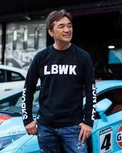

Wataru Kato
About
Wataru Kato is the founder and creative director of Liberty Walk, a renowned Japanese automotive tuning company. Liberty Walk is famous worldwide for its bold widebody kits and distinctive stance-focused car designs.

Liberty Walk Co., Ltd.